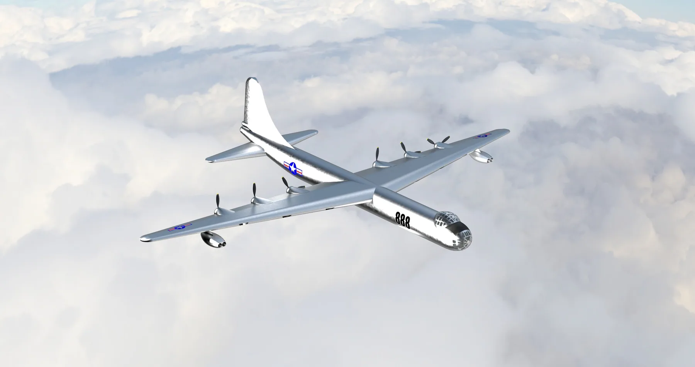

B-36 Peacemaker — High-Fidelity Siemens NX Aircraft Model
A detailed parametric recreation of the Convair B-36 Peacemaker built in Siemens NX, with constrained assemblies, moving mechanical elements, major aircraft systems, rendered views, and an engineering animation of the finished model.
- Aircraft
- Convair B-36 Peacemaker
- Software
- Siemens NX — modeling, assemblies, rendering, animation
- Modeled
- Fuselage, wings, propulsion elements, landing gear
- My role
- Full model — geometry, assembly structure, mechanisms, rendering, animation
- Type
- Digital engineering-modeling project

Building a large aircraft as a real assembly
The B-36 is a demanding aircraft to model. It is physically enormous, it carries an unusual mixed propulsion arrangement, and its structure has to read correctly from every angle for the model to be worth anything. I built it in Siemens NX as a parametric model rather than a single lump of surface geometry, so the aircraft is organised the way an engineering assembly actually is.
Major geometry and systems modeled include the fuselage, the wings, propulsion elements, and the landing gear. Components are held together with assembly constraints, and mechanical elements are built to move rather than being frozen in one position.
What the project involved
- Aircraft geometry — fuselage, wings, propulsion elements, and landing gear
- Assembly structure — organising a large component count so the model stays navigable and editable
- Constrained mechanisms — moving mechanical elements driven by assembly constraints
- Engineering animation — motion studies demonstrating how those mechanisms move
- Rendering — presentation views of the completed aircraft
Scope note: this is a digital engineering-modeling project in Siemens NX. It is a recreation of an existing aircraft — no physical B-36 was built or flown as part of this work.
The model in motion
Finished model
What I took from it
- Assembly structure is a design decision. On a model this size, how components are grouped and constrained determines whether the file stays workable or becomes impossible to edit.
- Constraints are what make a model behave like hardware. Building mechanisms to move properly is a very different exercise from placing parts where they look right.
- Aircraft geometry is unforgiving. Surfaces that blend correctly from one viewpoint often fall apart from another, so the model has to be checked continuously from all sides.